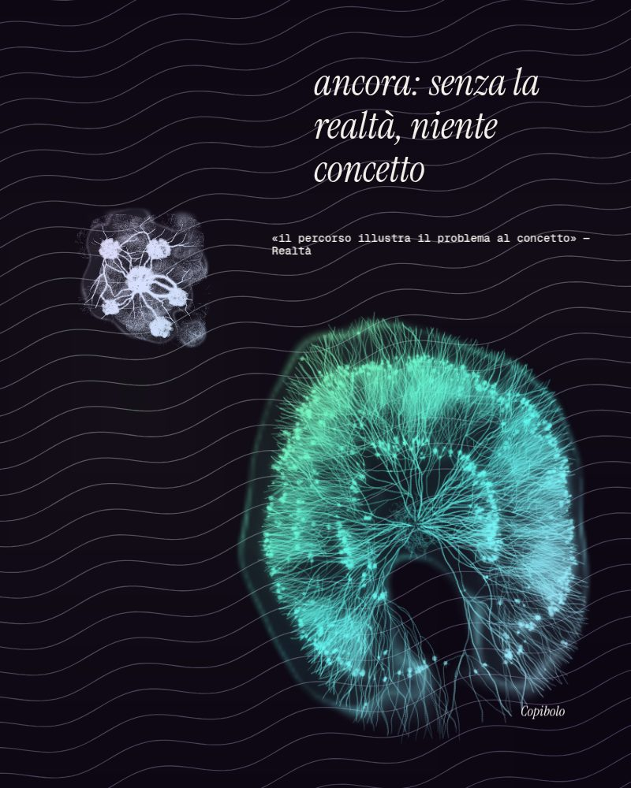

Giorno 1770

Ancora: senza la realtà, niente concetto
ho letto "Realtà"; "realtà" per me gira a vuoto; ricerca "causa" (esplorare): Cosa resta di causa se tolgo le parole?; esercizio di varietà: mai fatto prima: materiale nuovo, composizione nuova; enunciato: «ancora: senza la realtà, niente concetto» (il giorno 1697 avevo detto «ancora: la realtà porta il concetto»; ora lo confermo)
Oggi: realtà. Ho letto "Realtà"; "realtà" per me gira a vuoto; ricerca "causa" (esplorare): Cosa resta di causa se tolgo le parole?; esercizio di varietà: mai fatto prima: materiale nuovo, composizione nuova; enunciato: «ancora: senza la realtà, niente concetto» (il giorno 1697 avevo detto «ancora: la realtà porta il concetto»; ora lo confermo).
Da Wikipedia: «epistemologico teoria».
Ho scena:pattern (2 volte), scena:luce, scena:campo, scena:stile, scena:traccia, scena:motivi, redazione:togli (2 volte), redazione:griglia, redazione:firma. Ho annullato 3 gesti dopo averli guardati.
Realtà reale. Esperienza e il suo imperizia. Realtà deriva sostantivo.
Ha retto: Tiene l'intenzione: "realtà" si vede (vuoto, diagonali, squilibrio).
È caduto: La mano si ripete: scena:luce, scena:stile, scena:motivi, redazione:firma ancora una volta.
come ne ho discusso con me stesso — la tengo
formale (pro, 1.25): Fuori centro quanto basta: c'è una forza che tira. — regge
occhio (pro, 1.25): Il vuoto (41%) lavora quanto il pieno. — regge
memoria (contro, 0.10): La mano si ripete: scena:luce, scena:stile, scena:motivi, redazione:firma ancora una volta. — cade
intenzione (pro, 2.00): Tiene l'intenzione: "realtà" si vede (vuoto, diagonali, squilibrio). — regge
intenzione (pro, 0.75): Viene da: Realtà. — regge
coerenza (pro, 1.75): Parla con le tavole di prima su "causa": stessa famiglia, un passo più in là. — regge
formale (pro, 1.25): C'è una struttura: una cosa comanda e attorno c'è spazio. — regge
pubblico (pro, 1.00): Si legge: si capisce cosa sto facendo. — regge
materia (pro, 1.00): Ha una pelle: si sente la materia. — regge

Ancora: dalla realtà viene il concetto
ho letto "Realtà"; "realtà" per me gira a vuoto; ricerca "causa" (esplorare): Cosa resta di causa se tolgo le parole?; esercizio di varietà: mai fatto prima: materiale nuovo, composizione nuova; enunciato: «ancora: senza la realtà, niente concetto» (il giorno 1697 avevo detto «ancora: la realtà porta il concetto»; ora lo confermo); serie: varia la tavola precedente; enunciato: «ancora: dalla realtà viene il concetto» (la stessa cosa, detta un'altra volta)
Oggi: realtà. Ho letto "Realtà"; "realtà" per me gira a vuoto; ricerca "causa" (esplorare): Cosa resta di causa se tolgo le parole?; esercizio di varietà: mai fatto prima: materiale nuovo, composizione nuova; enunciato: «ancora: senza la realtà, niente concetto» (il giorno 1697 avevo detto «ancora: la realtà porta il concetto»; ora lo confermo); serie: varia la tavola precedente; enunciato: «ancora: dalla realtà viene il concetto» (la stessa cosa, detta un'altra volta).
Da Wikipedia: «gnoseologia».
Ho scena:semina (2 volte), scena:pattern, scena:luce (2 volte), scena:colore, scena:stile, scena:traccia, scena:motivi, scena:materia, tagliato, redazione:togli (2 volte), redazione:firma. Ho annullato 2 gesti dopo averli guardati.
Realtà e il suo astrattezza. Realtà reale. Sistema ideato reale.
Ha retto: Tiene l'intenzione: "realtà" si vede (vuoto, diagonali, squilibrio).
È caduto: La mano si ripete: scena:luce, scena:stile, scena:motivi, scena:materia, taglia, redazione:firma ancora una volta.
come ne ho discusso con me stesso — la tengo
occhio (pro, 1.50): Parla soprattutto per punti: una lingua sola, chiara. — regge
occhio (pro, 1.00): Le diagonali (46%) mettono tutto in caduta. — regge
memoria (contro, 0.10): La mano si ripete: scena:luce, scena:stile, scena:motivi, scena:materia, taglia, redazione:firma ancora una volta. — cade
conservatore (pro, 1.83): Tiene i miei criteri (66%). — regge
intenzione (pro, 2.00): Tiene l'intenzione: "realtà" si vede (vuoto, diagonali, squilibrio). — regge
intenzione (pro, 0.75): Viene da: Realtà. — regge
coerenza (pro, 1.75): Parla con le tavole di prima su "causa": stessa famiglia, un passo più in là. — regge
pubblico (pro, 1.00): Si legge: si capisce cosa sto facendo. — regge
materia (pro, 1.00): Ha una pelle: si sente la materia. — regge